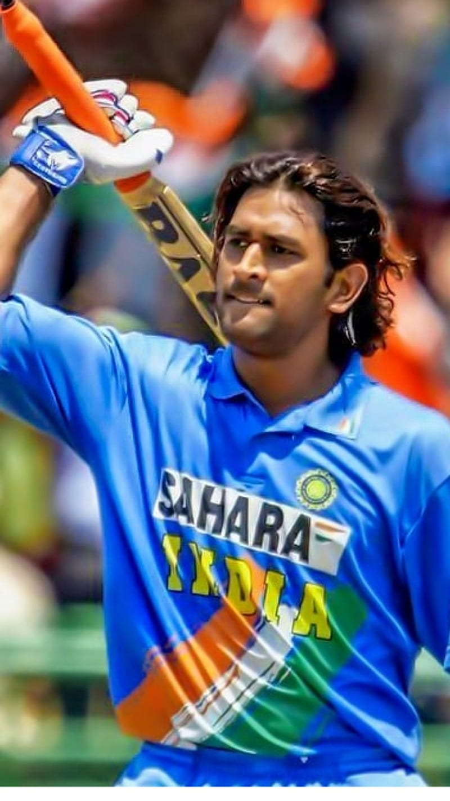

Mahendra Singh Dhoni ( born 7 July 1981) is an Indian professional cricketer who plays as a right-handed batter and a wicket-keeper. Widely regarded as one of the most prolific wicket-keeper batsmen and captains, he represented the Indian cricket team and was the captain of the team in limited overs formats from 2007 to 2017 and in Test cricket from 2008 to 2014. Dhoni has captained the most number of international matches and is the most successful Indian captain. He has led India to victory in the 2007 ICC World Twenty20, the 2011 Cricket World Cup, and the 2013 ICC Champions Trophy,being the only captain to win three different limited overs ICC tournaments. He also led the teams that won the Asia Cup in 2010 and 2016, and was a member of the title-winning squad in 2018.
Mahendra Singh Dhoni(MSD) is special because of his unmatched "Captain Cool" composure,legendary tactical brilliance, and his journey from a small-town ticket collector to one of cricket's greatest icons.
Dhoni was born in Ranchi, Bihar (now in Jharkhand), India, to Pan Singh and Devaki Devi. He has a younger brother, Narendra Singh Dhoni, and a younger sister, Jayanti Gupta. His father worked in junior management positions in MECON, a public sector company. Dhoni was educated at DAV Jawahar Vidya Mandir, Shyamali, Ranchi, and later at St. Xavier's College, Ranchi, where he graduated in commerce. He is married to Sakshi Singh Rawat, whom he met through a common friend in 2004. The couple has a daughter named Ziva, born in February 2015.
He played as a wicket-keeper for Commando cricket club from 1995 to 1998 and Central Coal Fields Limited (CCL) team in 1998.[13] At CCL, he batted higher up the order and helped the team qualify to the higher division.[14] Based on his performance at club cricket, he was picked for the 1997/98 season of Vinoo Mankad Trophy under-16 championship.[15][16] In the 1998–99, Dhoni played for Bihar U-19 team in the Cooch Behar Trophy and scored 176 runs in 5 matches. In the 1999–2000 Cooch Behar Trophy, the Bihar U-19 cricket team made it to the finals, where Dhoni made 84 in a losing cause.[17] Dhoni's contribution in the tournament included 488 runs in nine matches with five fifties, 17 catches and seven stumpings.[18] Dhoni made it to the East Zone U-19 squad for the C. K. Nayudu Trophy in the 1999–2000 season and scored only 97 runs in four matches, as East Zone lost all the matches and finished last in the tournament.[
In 2008, Dhoni was awarded the ICC ODI Player of the Year award, becoming the first Indian to win the award. He was also named captain of the ICC World Test XI and ICC World ODI XI. In 2009, he received the Rajiv Gandhi Khel Ratna award, India's highest sporting honour. In 2011, Dhoni was named captain of the ICC World Test XI and ICC World ODI XI for the second time. In 2012, he was awarded the Padma Bhushan, India's third highest civilian award. In 2013, he was named captain of the ICC World Test XI for the third time. In 2018, he was named captain of the ICC World ODI XI for the fourth time.
Dhoni was born in Ranchi, Bihar (now in Jharkhand), India, to Pan Singh and Devaki Devi. He has a younger brother, Narendra Singh Dhoni, and a younger sister, Jayanti Gupta. His father worked in junior management positions in MECON, a public sector company. Dhoni was educated at DAV Jawahar Vidya Mandir, Shyamali, Ranchi, and later at St. Xavier's College, Ranchi, where he graduated in commerce. He is married to Sakshi Singh Rawat, whom he met through a common friend in 2004. The couple has a daughter named Ziva, born in February 2015.
Dhoni is widely regarded as one of the greatest cricket captains and wicket-keeper batsmen in the history of the sport. His calm demeanor under pressure, innovative captaincy, and ability to finish matches have earned him the nickname "Captain Cool." He has inspired a generation of cricketers and fans alike, and his contributions to Indian cricket have left an indelible mark on the game.